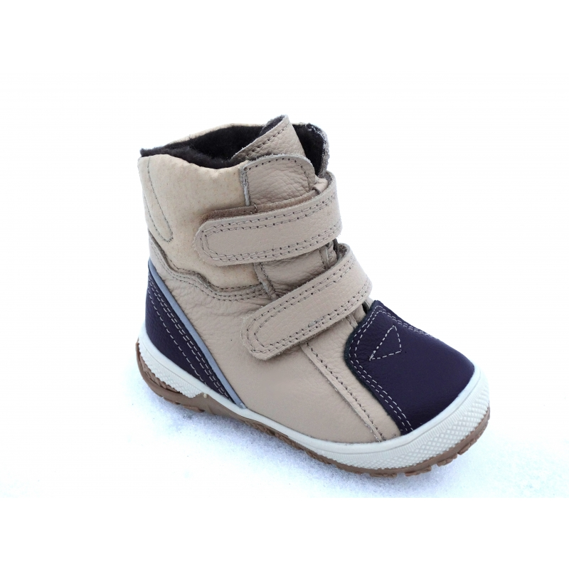

Welcome to ortopediniai batai
Ortopedijos technika - prekės - centras
2020.10.30 04:32Šios internetinės parduotuvės veikimui reikalingi slapukai (angl. cookies). Dėl detalesnės informacijos, kuri saugoma slapukuose, skaitykite mūsų privatumo politiką . Slapukų iš šios parduotuvės priėmimui, spauskite "Leisti".
LeistiSveiki!
Meniu Ieškoti Mano paskyra Krepšelis 0Neseniai pridėtos prekės ×
Jūsų krepšelis yra tuščias.
Įtvarai Peržiūrėti visus Įtvarai Individualūs įtvarai Pėdos piršto įtvarai Čiurnos įtvarai Blauzdos įtvarai Kelio įtvarai Šlaunies įtvarai Klubo įtvarai Piršto įtvarai Riešo įtvarai Alkūnės įtvarai Peties įtvarai Kaklo įtvarai Laikysenos korektoriai Raktikaulio įtvarai Rankos laikikliai Nugaros, pilvo įtvarai Įtvarai gimdai prilaikyti Įtvarai išvaržai gydyti Peržiūrėti visus Įtvarai išvaržai gydyti Diržai kirkšnies išvaržai Diržai bambos išvaržai Įtvarai vaikams Kompresinės kojinės ir rankovės Peržiūrėti visus Kompresinės kojinės ir rankovės Profilaktinės kojinės ir pėdkelnės Kompresinės kojinės ir pėdkelnės Peržiūrėti visus Kompresinės kojinės ir pėdkelnės I kompresinės klasės kojinės ir pėdkelnės II kompresinės klasės kojinės ir pėdkelnės III kompresinės klasės kojinės ULCER-X THROMBO-X Kompresinės rankovės Peržiūrėti visus Kompresinės rankovės II kompresinės klasės rankovės Pagalbinės priemonės Ortopediniai įdėklai ir pakulnės Peržiūrėti visus Ortopediniai įdėklai ir pakulnės Odiniai įdėklai, pakulnės Geliniai įdėklai, pakulnės Kamštiniai įdėklai Individualių vidpadžių gamyba Priemonės pėdoms Peržiūrėti visus Priemonės pėdoms Tarpupirščių plėtikliai Tarpupirščių skyrikliai Pėdų apsaugos Pėdų priežiūros priemonės Ortopediniai batai - avalynė Peržiūrėti visus Ortopediniai batai - avalynė Avalynė vaikams Peržiūrėti visus Avalynė vaikams BIRKENSTOCK avalynė vaikams DAWID avalynė vaikams Avalynė moterims Peržiūrėti visus Avalynė moterims BIRKENSTOCK avalynė moterims BEFADO DR ORTO avalynė moterims FLORETT avalynė moterims VAROMED avalynė moterims Avalynė vyrams Peržiūrėti visus Avalynė vyrams BIRKENSTOCK avalynė vyrams BEFADO DR ORTO avalynė vyrams VAROMED avalynė vyrams Pooperacinė avalynė Prekės nėščiosioms Peržiūrėti visus Prekės nėščiosioms Liemenėlės nėščiosioms ir maitinančioms Kelnaitės Peržiūrėti visus Kelnaitės Kelnaitės nėščiosioms Kelnaitės po gimdymo Nėščiųjų diržai Pėdkelnės ir tamprės Peržiūrėti visus Pėdkelnės ir tamprės Pėdkelnės ir tamprės nėščiosioms Žindymo pagalvės Įtvarai su angora Reabilitacijai Peržiūrėti visus Reabilitacijai GYMNIC terapiniai kamuoliai THERA-BAND terapinės juostos ir rankenėlės Laikysenos koregavimo priemonės Priemonės plaštakos mankštai Priemonės mankštai ir masažui Kitos priemonės reabilitacijai Sportui Peržiūrėti visus Sportui Įtvarai sportui Peržiūrėti visus Įtvarai sportui Čiurnos, blauzdos, šlaunies įtvarai sportui Riešo įtvarai sportui Kelio įtvarai sportui Peties, alkūnės įtvarai sportui Sportinės kojinės Kitos priemonės sportui Prekės slaugai Peržiūrėti visus Prekės slaugai Tualeto įranga, reikmenys Dušo, vonios reikmenys Priemonės pragulų profilaktikai Patalynė, paklodės Kitos priemonės slaugai Priemonės judėjimui Peržiūrėti visus Priemonės judėjimui Vaikščiojimo lazdos Ramentai Vaikštynės Neįgaliųjų vežimėliai Pagalvės ir čiužiniai Peržiūrėti visus Pagalvės ir čiužiniai Tempur Peržiūrėti visus Tempur Tempur pagalvės Tempur čiužiniai Grikė Peržiūrėti visus Grikė Grikių lukštų pagalvės Grikė čiužiniai Grikių lukštų gaminiai vaikams Kiti grikių lukštų gaminiai Ryteksma Peržiūrėti visus Ryteksma Ryteksma pagalvės Ryteksma čiužiniai Riposo Peržiūrėti visus Riposo Riposo čiužiniai Zappy Moterims po krūtų operacijų Protezai Peržiūrėti visus Protezai Rankų protezai Kojų protezai Medžiagos įtvarų gamybai Medžiagos protezų gamybai Kompensuojami gaminiai Nuoma Dovanų kuponas Mano krepšelis Naujienos Pristatymo sąlygos Prisijungti ar sukurti paskyrą Užsakymo informacija Atsijungti Apie mus Naujienos Išpardavimai Pardavimo vietos Straipsniai Privatumo politika KontaktaiOrtopedijos technika - centras
Akcijos
Visos akcijos
Rūšiuoti pagal Pozicija Pavadinimas Kaina Mažėjantis
5 prekė(s)
Rodyti 12 24 36 VisiSuvarstomas čiurnos įtvaras 12120
Sena kaina: 37,00 €
Special Price 18,50 €
Į krepšelį PažymėtiRiešo įtvarai su angora HWP160
7,01 € Į krepšelį Pažymėti
Alkūnės įtvaras su angora HWD176
8,70 € Į krepšelį Pažymėti
Kelio įtvaras su angora HWJ180
10,01 € Į krepšelį Pažymėti
Juosmens įtvaras su angora HWBAK0
20,00 € Į krepšelį Pažymėti
Rūšiuoti pagal Pozicija Pavadinimas Kaina Mažėjantis
5 prekė(s)
Rodyti 12 24 36 VisiGeriausi pasiūlymai
Visi pasiūlymai
Rūšiuoti pagal Pozicija Pavadinimas Kaina Mažėjantis
5 prekė(s)
Rodyti 12 24 36 VisiTekstilinis nugaros įtvaras T-421
49,01 € Į krepšelį Pažymėti
Nykščio įtvaras M670/M770
24,01 € Į krepšelį Pažymėti
Profilaktinės kojinės TRAVENO by SIGVARIS
19,00 € Į krepšelį Pažymėti
Sulankstoma metalinė lazdelė W2070
16,00 € Į krepšelį Pažymėti
Juosmens įtvaras būsimai mamai Happymammy 984
42,00 € Į krepšelį Pažymėti
Rūšiuoti pagal Pozicija Pavadinimas Kaina Mažėjantis
5 prekė(s)
Rodyti 12 24 36 VisiNaujienos
Visi nauji produktai
Rūšiuoti pagal Pozicija Pavadinimas Kaina Mažėjantis
9 prekė(s)
Rodyti 12 24 36 VisiAlkūnės juostelė epikondilitui OS6210
17,00 € Į krepšelį Pažymėti
Ortopedinė liemenėlė VICTORIA 67100
23,00 € Į krepšelį Pažymėti
Sportiniai įdėklai OS6706
39,00 € Į krepšelį Pažymėti
Juosmens įtvaras būsimai mamai ACE601
40,00 € Į krepšelį Pažymėti
Stabilizuojantis kelio įtvaras ONE AIR OA8000
40,00 € Į krepšelį Pažymėti
Stabilizuojantis čiurnos įtvaras ONE AIR OA9000
27,00 € Į krepšelį Pažymėti
Juosmens įtvaras ONE AIR OA6000
79,00 € Į krepšelį Pažymėti
Raištinis čiurnos įtvaras „Fixquick“ su Boa užsegimu
49,01 € Į krepšelį Pažymėti
Stabilizuojantis čiurnos įtvaras, EST-085
43,00 € Į krepšelį Pažymėti
Rūšiuoti pagal Pozicija Pavadinimas Kaina Mažėjantis
9 prekė(s)
Rodyti 12 24 36 VisiPopuliariausios prekės
Visos populiariausios prekės
Rūšiuoti pagal Pozicija Pavadinimas Kaina Mažėjantis
8 prekė(s)
Rodyti 12 24 36 VisiTekstilinis čiurnos įtvaras TN-241
19,00 € Į krepšelį Pažymėti
Tekstilinis kelio įtvaras su plastikiniais sutvirtinimais OS6211
29,00 € Į krepšelį Pažymėti
Alkūnės juostelė epikondilitui EP-21G
32,00 € Į krepšelį Pažymėti
Diržas nėščiosioms LombaMum 0805
78,00 € Į krepšelį Pažymėti
Sportinės kojinės SIGVARIS SPORTS RUNNING
43,00 € Į krepšelį Pažymėti
Neopreninis nugaros įtvaras su sutvirtinimais 4200
40,00 € Į krepšelį Pažymėti
Sportinės kojinės SIGVARIS SPORTS MOUNTAIN
43,00 € Į krepšelį Pažymėti
Basutės MILANO 1018175
70,00 € Į krepšelį Pažymėti
Rūšiuoti pagal Pozicija Pavadinimas Kaina Mažėjantis
8 prekė(s)
Rodyti 12 24 36 Visi Idemus.lt elektroninė parduotuvė - pasirengusi aptarnauti savo klientą su aukščiausio lygio ir kokybės produkcija, kuri skirta kiekvienam mūsų klientui. Taip pat pateiksime jums ortopedinės technikos konsultacijas, kurias suteiks mūsų specializuoti specialistai, turintys tam leidimus. Mūsų produkcija yra garantuota ir patikima su grąžinimo galimybė. Todėl tikrai nenusivilsite ir būsite patenkinti tokia kokybę kokią rasite. Galime pasidžiaugti, jog mūsų tiekiamos prekės rinkoje yra vienos iš geriausių. Dėl to, jog žinome, kad ortopedijos technika privalo būti kokybiška ir patikima kiekvienam jūsų vartotojui.Prekės Įtvarai Individualūs įtvarai Pėdos piršto įtvarai Čiurnos įtvarai Blauzdos įtvarai Kelio įtvarai Šlaunies įtvarai Klubo įtvarai Piršto įtvarai Riešo įtvarai Alkūnės įtvarai Peties įtvarai Kaklo įtvarai Laikysenos korektoriai Raktikaulio įtvarai Rankos laikikliai Nugaros, pilvo įtvarai Įtvarai gimdai prilaikyti Įtvarai išvaržai gydyti Diržai kirkšnies išvaržai Diržai bambos išvaržai Įtvarai vaikams Kompresinės kojinės ir rankovės Profilaktinės kojinės ir pėdkelnės Kompresinės kojinės ir pėdkelnės I kompresinės klasės kojinės ir pėdkelnės II kompresinės klasės kojinės ir pėdkelnės III kompresinės klasės kojinės ULCER-X THROMBO-X Kompresinės rankovės II kompresinės klasės rankovės Pagalbinės priemonės Ortopediniai įdėklai ir pakulnės Odiniai įdėklai, pakulnės Geliniai įdėklai, pakulnės Kamštiniai įdėklai Individualių vidpadžių gamyba Priemonės pėdoms Tarpupirščių plėtikliai Tarpupirščių skyrikliai Pėdų apsaugos Pėdų priežiūros priemonės Ortopediniai batai - avalynė Avalynė vaikams BIRKENSTOCK avalynė vaikams DAWID avalynė vaikams Avalynė moterims BIRKENSTOCK avalynė moterims BEFADO DR ORTO avalynė moterims FLORETT avalynė moterims VAROMED avalynė moterims Avalynė vyrams BIRKENSTOCK avalynė vyrams BEFADO DR ORTO avalynė vyrams VAROMED avalynė vyrams Pooperacinė avalynė Prekės nėščiosioms Liemenėlės nėščiosioms ir maitinančioms Kelnaitės Kelnaitės nėščiosioms Kelnaitės po gimdymo Nėščiųjų diržai Pėdkelnės ir tamprės Pėdkelnės ir tamprės nėščiosioms Žindymo pagalvės Įtvarai su angora Reabilitacijai GYMNIC terapiniai kamuoliai THERA-BAND terapinės juostos ir rankenėlės Laikysenos koregavimo priemonės Priemonės plaštakos mankštai Priemonės mankštai ir masažui Kitos priemonės reabilitacijai Sportui Įtvarai sportui Čiurnos, blauzdos, šlaunies įtvarai sportui Riešo įtvarai sportui Kelio įtvarai sportui Peties, alkūnės įtvarai sportui Sportinės kojinės Kitos priemonės sportui Prekės slaugai Tualeto įranga, reikmenys Dušo, vonios reikmenys Priemonės pragulų profilaktikai Patalynė, paklodės Kitos priemonės slaugai Priemonės judėjimui Vaikščiojimo lazdos Ramentai Vaikštynės Neįgaliųjų vežimėliai Pagalvės ir čiužiniai Tempur Tempur pagalvės Tempur čiužiniai Grikė Grikių lukštų pagalvės Grikė čiužiniai Grikių lukštų gaminiai vaikams Kiti grikių lukštų gaminiai Ryteksma Ryteksma pagalvės Ryteksma čiužiniai Riposo Riposo čiužiniai Zappy Moterims po krūtų operacijų Protezai Rankų protezai Kojų protezai Medžiagos įtvarų gamybai Medžiagos protezų gamybai Kompensuojami gaminiai Nuoma Dovanų kuponas
Medicininės paslaugos
Ortopedų-traumatologų konsultacijos Vilniuje Kraujagyslių chirurgų konsultacijos Vilniuje Gydytojų konsultacijos kituose miestuose Klubo sąnario echoskopija kūdikiams Kompiuterinis pėdų tyrimas
Naujienlaiškis
Grąžinimas ir pakeitimas Pirkimo taisyklės Apmokėjimo būdai Prekių pristatymas ir atsiėmimas Garantija
Tinklapio sprendimas: idemus.lt
Naujienos
Darbo iš namų - iššūkiai ir priemonės jiems įveikti
2020-04-09Viso pasaulio sveikatos apsaugos pareigūnai karantino metu ragina dirbti iš namų, todėl daugelio mūsų namai tapo laikina darbo vieta.
Galbūt darbas vilkint pižamą kai kam ir kelia džiaugsmą, tačiau dauguma susiduria su tuo, kad neturi tinkamos darbo vietos, kokią turi biure, o tai turi įtakos laikysenai. Todėl labai svarbu pritaikyti savo namų erdvę, kad ji būtų patogi. Netaisyklinga laikysena gali pakenkti sveikatai, sukelti galvos, nugaros, kaklo, klubų, kelių ir net pėdų skausmus.
Modernios priemonės tendinito gydymui - Orliman „Fixquick“ su BOA užsegimu
2019-11-07Labai tikėtina, kad esate bent vieną kartą nukentėję nuo tendinito* ar raumenų perkrovos. Tai ne tik labai skausminga, bet ir vargina kurį laiką. Kartais tendinitu sergama tik kelias dienas, tačiau skausmas gali tęstis ir ilgą laiką. Remiantis tyrimais, 30-50% sausgyslių pažeidimų įvyksta aktyvios fizinės veiklos metu.
Šis uždegimas išsivysto, kai kartojamas monotoniškas veiksmas, kai žmogus pavyzdžiui: ilgai dirba kompiuteriu, sode, pjausto, siuva, vairuoja, ilgiau nei keturias valandas per dieną fiksuotoje kūno padėtyje. Taip pat tie, kurie žaidžia tenisą ar golfą, slidinėja, bėgioja avėdami netinkamus sportinius batelius, sportuoja be apšilimo.
© 2019 Idemus.lt. Visos teisės saugomos. Svetainės žemėlapis | Detali paieška | Mano sąskaita | Užsakymai ir grąžinimai Pagalba telefonu+370 (659) 02035 Pagalba el. paštu
perku@idemus.lt
